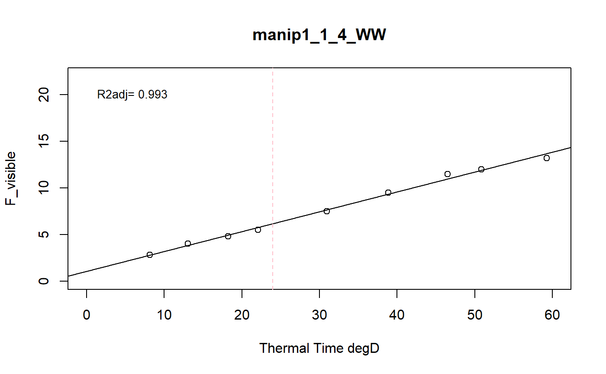

a function to model the phyllocron using a linear regression
fitReg.Rdthis function models each plant of a dataset using a regression to extract the slope (i.e. phyllocron: the rate of leaf appearance)
fitReg(datain, trait, xtime, myylim, reference, myxlab)
Arguments
| datain | input dataframe (wide format, as many columns as variables) |
|---|---|
| trait | variable to modelize (example visible_leaf, F_visible) |
| xtime | character, name of thermal time column in the input dataset (example thermaltime) |
| myylim | maximum value of y-axis for graphic |
| reference | character, a column name indicating an unique identifiant of plant (example: Ref == concatenation of experimentAlias-Line-Position-scenario) |
| myxlab | character, a x label for the output graphics |
Value
a list of two elements and the graphics of the regression
1: a dataframe of the predictions of the slope for each plant (phyllocron)
2: a list of fitted models for each plant for diagnostics purposes
Details
the input dataset must contain a thermalTime column (numeric data) and a Ref column (unique id)
Examples
# \donttest{ # Take a while... selec<-c("manip1_1_1_WW","manip1_1_2_WW","manip1_1_3_WW", "manip1_1_4_WW","manip1_1_5_WW") mydata<-plant2[plant2[,"Ref"] %in% selec,] resu<-fitReg(datain=mydata,trait="F_visible",xtime="thermalTime", myylim=22,reference="Ref", myxlab="Thermal Time degD")str(resu)#> List of 2 #> $ :'data.frame': 5 obs. of 2 variables: #> ..$ Ref: chr [1:5] "manip1_1_1_WW" "manip1_1_2_WW" "manip1_1_3_WW" "manip1_1_4_WW" ... #> ..$ phy: num [1:5] 0.246 0.213 0.219 0.213 0.22 #> $ :List of 5 #> ..$ manip1_1_1_WW:List of 12 #> .. ..$ coefficients : Named num [1:2] 0.494 0.246 #> .. .. ..- attr(*, "names")= chr [1:2] "(Intercept)" "x" #> .. ..$ residuals : Named num [1:8] 0.302 0.297 -0.186 -0.42 0.091 ... #> .. .. ..- attr(*, "names")= chr [1:8] "1" "2" "3" "4" ... #> .. ..$ effects : Named num [1:8] -21.2839 10.2465 -0.2857 -0.5042 0.0446 ... #> .. .. ..- attr(*, "names")= chr [1:8] "(Intercept)" "x" "" "" ... #> .. ..$ rank : int 2 #> .. ..$ fitted.values: Named num [1:8] 2.5 3.7 4.99 5.92 8.11 ... #> .. .. ..- attr(*, "names")= chr [1:8] "1" "2" "3" "4" ... #> .. ..$ assign : int [1:2] 0 1 #> .. ..$ qr :List of 5 #> .. .. ..$ qr : num [1:8, 1:2] -2.828 0.354 0.354 0.354 0.354 ... #> .. .. .. ..- attr(*, "dimnames")=List of 2 #> .. .. .. .. ..$ : chr [1:8] "1" "2" "3" "4" ... #> .. .. .. .. ..$ : chr [1:2] "(Intercept)" "x" #> .. .. .. ..- attr(*, "assign")= int [1:2] 0 1 #> .. .. ..$ qraux: num [1:2] 1.35 1.24 #> .. .. ..$ pivot: int [1:2] 1 2 #> .. .. ..$ tol : num 1e-07 #> .. .. ..$ rank : int 2 #> .. .. ..- attr(*, "class")= chr "qr" #> .. ..$ df.residual : int 6 #> .. ..$ xlevels : Named list() #> .. ..$ call : language lm(formula = y ~ x) #> .. ..$ terms :Classes 'terms', 'formula' language y ~ x #> .. .. .. ..- attr(*, "variables")= language list(y, x) #> .. .. .. ..- attr(*, "factors")= int [1:2, 1] 0 1 #> .. .. .. .. ..- attr(*, "dimnames")=List of 2 #> .. .. .. .. .. ..$ : chr [1:2] "y" "x" #> .. .. .. .. .. ..$ : chr "x" #> .. .. .. ..- attr(*, "term.labels")= chr "x" #> .. .. .. ..- attr(*, "order")= int 1 #> .. .. .. ..- attr(*, "intercept")= int 1 #> .. .. .. ..- attr(*, "response")= int 1 #> .. .. .. ..- attr(*, ".Environment")=<environment: 0x00000000316f9060> #> .. .. .. ..- attr(*, "predvars")= language list(y, x) #> .. .. .. ..- attr(*, "dataClasses")= Named chr [1:2] "numeric" "numeric" #> .. .. .. .. ..- attr(*, "names")= chr [1:2] "y" "x" #> .. ..$ model :'data.frame': 8 obs. of 2 variables: #> .. .. ..$ y: num [1:8] 2.8 4 4.8 5.5 8.2 9.2 12.5 13.2 #> .. .. ..$ x: num [1:8] 8.15 13.05 18.27 22.06 30.96 ... #> .. .. ..- attr(*, "terms")=Classes 'terms', 'formula' language y ~ x #> .. .. .. .. ..- attr(*, "variables")= language list(y, x) #> .. .. .. .. ..- attr(*, "factors")= int [1:2, 1] 0 1 #> .. .. .. .. .. ..- attr(*, "dimnames")=List of 2 #> .. .. .. .. .. .. ..$ : chr [1:2] "y" "x" #> .. .. .. .. .. .. ..$ : chr "x" #> .. .. .. .. ..- attr(*, "term.labels")= chr "x" #> .. .. .. .. ..- attr(*, "order")= int 1 #> .. .. .. .. ..- attr(*, "intercept")= int 1 #> .. .. .. .. ..- attr(*, "response")= int 1 #> .. .. .. .. ..- attr(*, ".Environment")=<environment: 0x00000000316f9060> #> .. .. .. .. ..- attr(*, "predvars")= language list(y, x) #> .. .. .. .. ..- attr(*, "dataClasses")= Named chr [1:2] "numeric" "numeric" #> .. .. .. .. .. ..- attr(*, "names")= chr [1:2] "y" "x" #> .. ..- attr(*, "class")= chr "lm" #> ..$ manip1_1_2_WW:List of 12 #> .. ..$ coefficients : Named num [1:2] 0.876 0.213 #> .. .. ..- attr(*, "names")= chr [1:2] "(Intercept)" "x" #> .. ..$ residuals : Named num [1:9] -0.1086 0.3504 0.0413 -0.3663 -0.258 ... #> .. .. ..- attr(*, "names")= chr [1:9] "1" "2" "3" "4" ... #> .. ..$ effects : Named num [1:9] -23.0333 10.7807 0.0224 -0.3627 -0.2016 ... #> .. .. ..- attr(*, "names")= chr [1:9] "(Intercept)" "x" "" "" ... #> .. ..$ rank : int 2 #> .. ..$ fitted.values: Named num [1:9] 2.61 3.65 4.76 5.57 7.46 ... #> .. .. ..- attr(*, "names")= chr [1:9] "1" "2" "3" "4" ... #> .. ..$ assign : int [1:2] 0 1 #> .. ..$ qr :List of 5 #> .. .. ..$ qr : num [1:9, 1:2] -3 0.333 0.333 0.333 0.333 ... #> .. .. .. ..- attr(*, "dimnames")=List of 2 #> .. .. .. .. ..$ : chr [1:9] "1" "2" "3" "4" ... #> .. .. .. .. ..$ : chr [1:2] "(Intercept)" "x" #> .. .. .. ..- attr(*, "assign")= int [1:2] 0 1 #> .. .. ..$ qraux: num [1:2] 1.33 1.26 #> .. .. ..$ pivot: int [1:2] 1 2 #> .. .. ..$ tol : num 1e-07 #> .. .. ..$ rank : int 2 #> .. .. ..- attr(*, "class")= chr "qr" #> .. ..$ df.residual : int 7 #> .. ..$ xlevels : Named list() #> .. ..$ call : language lm(formula = y ~ x) #> .. ..$ terms :Classes 'terms', 'formula' language y ~ x #> .. .. .. ..- attr(*, "variables")= language list(y, x) #> .. .. .. ..- attr(*, "factors")= int [1:2, 1] 0 1 #> .. .. .. .. ..- attr(*, "dimnames")=List of 2 #> .. .. .. .. .. ..$ : chr [1:2] "y" "x" #> .. .. .. .. .. ..$ : chr "x" #> .. .. .. ..- attr(*, "term.labels")= chr "x" #> .. .. .. ..- attr(*, "order")= int 1 #> .. .. .. ..- attr(*, "intercept")= int 1 #> .. .. .. ..- attr(*, "response")= int 1 #> .. .. .. ..- attr(*, ".Environment")=<environment: 0x00000000316f9060> #> .. .. .. ..- attr(*, "predvars")= language list(y, x) #> .. .. .. ..- attr(*, "dataClasses")= Named chr [1:2] "numeric" "numeric" #> .. .. .. .. ..- attr(*, "names")= chr [1:2] "y" "x" #> .. ..$ model :'data.frame': 9 obs. of 2 variables: #> .. .. ..$ y: num [1:9] 2.5 4 4.8 5.2 7.2 9.2 11 12.2 13 #> .. .. ..$ x: num [1:9] 8.15 13.05 18.27 22.06 30.96 ... #> .. .. ..- attr(*, "terms")=Classes 'terms', 'formula' language y ~ x #> .. .. .. .. ..- attr(*, "variables")= language list(y, x) #> .. .. .. .. ..- attr(*, "factors")= int [1:2, 1] 0 1 #> .. .. .. .. .. ..- attr(*, "dimnames")=List of 2 #> .. .. .. .. .. .. ..$ : chr [1:2] "y" "x" #> .. .. .. .. .. .. ..$ : chr "x" #> .. .. .. .. ..- attr(*, "term.labels")= chr "x" #> .. .. .. .. ..- attr(*, "order")= int 1 #> .. .. .. .. ..- attr(*, "intercept")= int 1 #> .. .. .. .. ..- attr(*, "response")= int 1 #> .. .. .. .. ..- attr(*, ".Environment")=<environment: 0x00000000316f9060> #> .. .. .. .. ..- attr(*, "predvars")= language list(y, x) #> .. .. .. .. ..- attr(*, "dataClasses")= Named chr [1:2] "numeric" "numeric" #> .. .. .. .. .. ..- attr(*, "names")= chr [1:2] "y" "x" #> .. ..- attr(*, "class")= chr "lm" #> ..$ manip1_1_3_WW:List of 12 #> .. ..$ coefficients : Named num [1:2] 0.63 0.219 #> .. .. ..- attr(*, "names")= chr [1:2] "(Intercept)" "x" #> .. ..$ residuals : Named num [1:9] 0.0892 0.319 -0.1212 -0.4515 -0.1963 ... #> .. .. ..- attr(*, "names")= chr [1:9] "1" "2" "3" "4" ... #> .. ..$ effects : Named num [1:9] -22.867 11.083 -0.18 -0.492 -0.196 ... #> .. .. ..- attr(*, "names")= chr [1:9] "(Intercept)" "x" "" "" ... #> .. ..$ rank : int 2 #> .. ..$ fitted.values: Named num [1:9] 2.41 3.48 4.62 5.45 7.4 ... #> .. .. ..- attr(*, "names")= chr [1:9] "1" "2" "3" "4" ... #> .. ..$ assign : int [1:2] 0 1 #> .. ..$ qr :List of 5 #> .. .. ..$ qr : num [1:9, 1:2] -3 0.333 0.333 0.333 0.333 ... #> .. .. .. ..- attr(*, "dimnames")=List of 2 #> .. .. .. .. ..$ : chr [1:9] "1" "2" "3" "4" ... #> .. .. .. .. ..$ : chr [1:2] "(Intercept)" "x" #> .. .. .. ..- attr(*, "assign")= int [1:2] 0 1 #> .. .. ..$ qraux: num [1:2] 1.33 1.26 #> .. .. ..$ pivot: int [1:2] 1 2 #> .. .. ..$ tol : num 1e-07 #> .. .. ..$ rank : int 2 #> .. .. ..- attr(*, "class")= chr "qr" #> .. ..$ df.residual : int 7 #> .. ..$ xlevels : Named list() #> .. ..$ call : language lm(formula = y ~ x) #> .. ..$ terms :Classes 'terms', 'formula' language y ~ x #> .. .. .. ..- attr(*, "variables")= language list(y, x) #> .. .. .. ..- attr(*, "factors")= int [1:2, 1] 0 1 #> .. .. .. .. ..- attr(*, "dimnames")=List of 2 #> .. .. .. .. .. ..$ : chr [1:2] "y" "x" #> .. .. .. .. .. ..$ : chr "x" #> .. .. .. ..- attr(*, "term.labels")= chr "x" #> .. .. .. ..- attr(*, "order")= int 1 #> .. .. .. ..- attr(*, "intercept")= int 1 #> .. .. .. ..- attr(*, "response")= int 1 #> .. .. .. ..- attr(*, ".Environment")=<environment: 0x00000000316f9060> #> .. .. .. ..- attr(*, "predvars")= language list(y, x) #> .. .. .. ..- attr(*, "dataClasses")= Named chr [1:2] "numeric" "numeric" #> .. .. .. .. ..- attr(*, "names")= chr [1:2] "y" "x" #> .. ..$ model :'data.frame': 9 obs. of 2 variables: #> .. .. ..$ y: num [1:9] 2.5 3.8 4.5 5 7.2 9.2 11 12.2 13.2 #> .. .. ..$ x: num [1:9] 8.15 13.05 18.27 22.06 30.96 ... #> .. .. ..- attr(*, "terms")=Classes 'terms', 'formula' language y ~ x #> .. .. .. .. ..- attr(*, "variables")= language list(y, x) #> .. .. .. .. ..- attr(*, "factors")= int [1:2, 1] 0 1 #> .. .. .. .. .. ..- attr(*, "dimnames")=List of 2 #> .. .. .. .. .. .. ..$ : chr [1:2] "y" "x" #> .. .. .. .. .. .. ..$ : chr "x" #> .. .. .. .. ..- attr(*, "term.labels")= chr "x" #> .. .. .. .. ..- attr(*, "order")= int 1 #> .. .. .. .. ..- attr(*, "intercept")= int 1 #> .. .. .. .. ..- attr(*, "response")= int 1 #> .. .. .. .. ..- attr(*, ".Environment")=<environment: 0x00000000316f9060> #> .. .. .. .. ..- attr(*, "predvars")= language list(y, x) #> .. .. .. .. ..- attr(*, "dataClasses")= Named chr [1:2] "numeric" "numeric" #> .. .. .. .. .. ..- attr(*, "names")= chr [1:2] "y" "x" #> .. ..- attr(*, "class")= chr "lm" #> ..$ manip1_1_4_WW:List of 12 #> .. ..$ coefficients : Named num [1:2] 1.058 0.213 #> .. .. ..- attr(*, "names")= chr [1:2] "(Intercept)" "x" #> .. ..$ residuals : Named num [1:9] 0.00767 0.16559 -0.14462 -0.25307 -0.14664 ... #> .. .. ..- attr(*, "names")= chr [1:9] "1" "2" "3" "4" ... #> .. ..$ effects : Named num [1:9] -23.6 10.792 -0.167 -0.265 -0.136 ... #> .. .. ..- attr(*, "names")= chr [1:9] "(Intercept)" "x" "" "" ... #> .. ..$ rank : int 2 #> .. ..$ fitted.values: Named num [1:9] 2.79 3.83 4.94 5.75 7.65 ... #> .. .. ..- attr(*, "names")= chr [1:9] "1" "2" "3" "4" ... #> .. ..$ assign : int [1:2] 0 1 #> .. ..$ qr :List of 5 #> .. .. ..$ qr : num [1:9, 1:2] -3 0.333 0.333 0.333 0.333 ... #> .. .. .. ..- attr(*, "dimnames")=List of 2 #> .. .. .. .. ..$ : chr [1:9] "1" "2" "3" "4" ... #> .. .. .. .. ..$ : chr [1:2] "(Intercept)" "x" #> .. .. .. ..- attr(*, "assign")= int [1:2] 0 1 #> .. .. ..$ qraux: num [1:2] 1.33 1.26 #> .. .. ..$ pivot: int [1:2] 1 2 #> .. .. ..$ tol : num 1e-07 #> .. .. ..$ rank : int 2 #> .. .. ..- attr(*, "class")= chr "qr" #> .. ..$ df.residual : int 7 #> .. ..$ xlevels : Named list() #> .. ..$ call : language lm(formula = y ~ x) #> .. ..$ terms :Classes 'terms', 'formula' language y ~ x #> .. .. .. ..- attr(*, "variables")= language list(y, x) #> .. .. .. ..- attr(*, "factors")= int [1:2, 1] 0 1 #> .. .. .. .. ..- attr(*, "dimnames")=List of 2 #> .. .. .. .. .. ..$ : chr [1:2] "y" "x" #> .. .. .. .. .. ..$ : chr "x" #> .. .. .. ..- attr(*, "term.labels")= chr "x" #> .. .. .. ..- attr(*, "order")= int 1 #> .. .. .. ..- attr(*, "intercept")= int 1 #> .. .. .. ..- attr(*, "response")= int 1 #> .. .. .. ..- attr(*, ".Environment")=<environment: 0x00000000316f9060> #> .. .. .. ..- attr(*, "predvars")= language list(y, x) #> .. .. .. ..- attr(*, "dataClasses")= Named chr [1:2] "numeric" "numeric" #> .. .. .. .. ..- attr(*, "names")= chr [1:2] "y" "x" #> .. ..$ model :'data.frame': 9 obs. of 2 variables: #> .. .. ..$ y: num [1:9] 2.8 4 4.8 5.5 7.5 9.5 11.5 12 13.2 #> .. .. ..$ x: num [1:9] 8.15 13.05 18.27 22.06 30.96 ... #> .. .. ..- attr(*, "terms")=Classes 'terms', 'formula' language y ~ x #> .. .. .. .. ..- attr(*, "variables")= language list(y, x) #> .. .. .. .. ..- attr(*, "factors")= int [1:2, 1] 0 1 #> .. .. .. .. .. ..- attr(*, "dimnames")=List of 2 #> .. .. .. .. .. .. ..$ : chr [1:2] "y" "x" #> .. .. .. .. .. .. ..$ : chr "x" #> .. .. .. .. ..- attr(*, "term.labels")= chr "x" #> .. .. .. .. ..- attr(*, "order")= int 1 #> .. .. .. .. ..- attr(*, "intercept")= int 1 #> .. .. .. .. ..- attr(*, "response")= int 1 #> .. .. .. .. ..- attr(*, ".Environment")=<environment: 0x00000000316f9060> #> .. .. .. .. ..- attr(*, "predvars")= language list(y, x) #> .. .. .. .. ..- attr(*, "dataClasses")= Named chr [1:2] "numeric" "numeric" #> .. .. .. .. .. ..- attr(*, "names")= chr [1:2] "y" "x" #> .. ..- attr(*, "class")= chr "lm" #> ..$ manip1_1_5_WW:List of 12 #> .. ..$ coefficients : Named num [1:2] 0.467 0.22 #> .. .. ..- attr(*, "names")= chr [1:2] "(Intercept)" "x" #> .. ..$ residuals : Named num [1:9] -0.26356 0.45651 0.00597 -0.33184 -0.09421 ... #> .. .. ..- attr(*, "names")= chr [1:9] "1" "2" "3" "4" ... #> .. ..$ effects : Named num [1:9] -22.56667 11.18377 0.00813 -0.29852 0.01209 ... #> .. .. ..- attr(*, "names")= chr [1:9] "(Intercept)" "x" "" "" ... #> .. ..$ rank : int 2 #> .. ..$ fitted.values: Named num [1:9] 2.26 3.34 4.49 5.33 7.29 ... #> .. .. ..- attr(*, "names")= chr [1:9] "1" "2" "3" "4" ... #> .. ..$ assign : int [1:2] 0 1 #> .. ..$ qr :List of 5 #> .. .. ..$ qr : num [1:9, 1:2] -3 0.333 0.333 0.333 0.333 ... #> .. .. .. ..- attr(*, "dimnames")=List of 2 #> .. .. .. .. ..$ : chr [1:9] "1" "2" "3" "4" ... #> .. .. .. .. ..$ : chr [1:2] "(Intercept)" "x" #> .. .. .. ..- attr(*, "assign")= int [1:2] 0 1 #> .. .. ..$ qraux: num [1:2] 1.33 1.26 #> .. .. ..$ pivot: int [1:2] 1 2 #> .. .. ..$ tol : num 1e-07 #> .. .. ..$ rank : int 2 #> .. .. ..- attr(*, "class")= chr "qr" #> .. ..$ df.residual : int 7 #> .. ..$ xlevels : Named list() #> .. ..$ call : language lm(formula = y ~ x) #> .. ..$ terms :Classes 'terms', 'formula' language y ~ x #> .. .. .. ..- attr(*, "variables")= language list(y, x) #> .. .. .. ..- attr(*, "factors")= int [1:2, 1] 0 1 #> .. .. .. .. ..- attr(*, "dimnames")=List of 2 #> .. .. .. .. .. ..$ : chr [1:2] "y" "x" #> .. .. .. .. .. ..$ : chr "x" #> .. .. .. ..- attr(*, "term.labels")= chr "x" #> .. .. .. ..- attr(*, "order")= int 1 #> .. .. .. ..- attr(*, "intercept")= int 1 #> .. .. .. ..- attr(*, "response")= int 1 #> .. .. .. ..- attr(*, ".Environment")=<environment: 0x00000000316f9060> #> .. .. .. ..- attr(*, "predvars")= language list(y, x) #> .. .. .. ..- attr(*, "dataClasses")= Named chr [1:2] "numeric" "numeric" #> .. .. .. .. ..- attr(*, "names")= chr [1:2] "y" "x" #> .. ..$ model :'data.frame': 9 obs. of 2 variables: #> .. .. ..$ y: num [1:9] 2 3.8 4.5 5 7.2 9 11 12.2 13 #> .. .. ..$ x: num [1:9] 8.15 13.05 18.27 22.06 30.96 ... #> .. .. ..- attr(*, "terms")=Classes 'terms', 'formula' language y ~ x #> .. .. .. .. ..- attr(*, "variables")= language list(y, x) #> .. .. .. .. ..- attr(*, "factors")= int [1:2, 1] 0 1 #> .. .. .. .. .. ..- attr(*, "dimnames")=List of 2 #> .. .. .. .. .. .. ..$ : chr [1:2] "y" "x" #> .. .. .. .. .. .. ..$ : chr "x" #> .. .. .. .. ..- attr(*, "term.labels")= chr "x" #> .. .. .. .. ..- attr(*, "order")= int 1 #> .. .. .. .. ..- attr(*, "intercept")= int 1 #> .. .. .. .. ..- attr(*, "response")= int 1 #> .. .. .. .. ..- attr(*, ".Environment")=<environment: 0x00000000316f9060> #> .. .. .. .. ..- attr(*, "predvars")= language list(y, x) #> .. .. .. .. ..- attr(*, "dataClasses")= Named chr [1:2] "numeric" "numeric" #> .. .. .. .. .. ..- attr(*, "names")= chr [1:2] "y" "x" #> .. ..- attr(*, "class")= chr "lm"# }